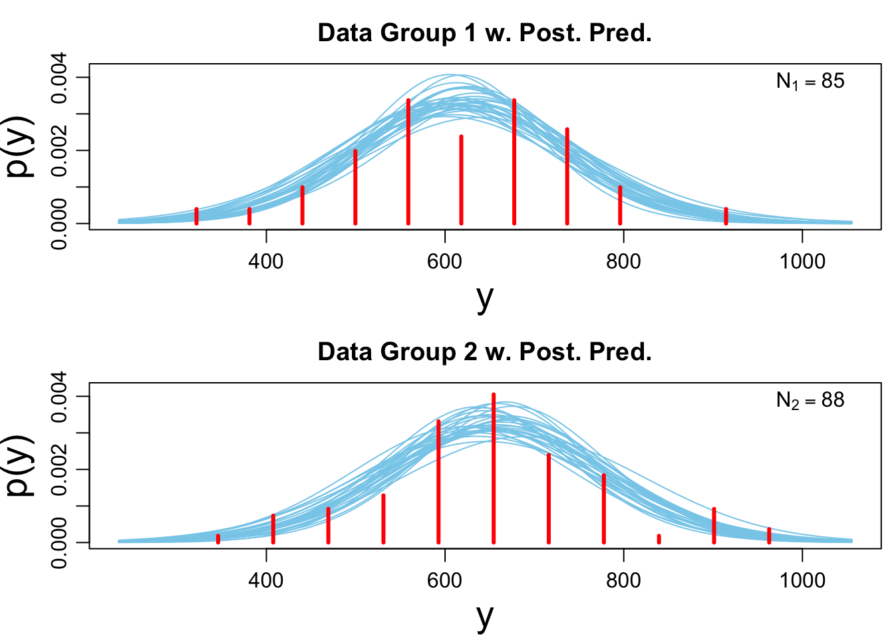
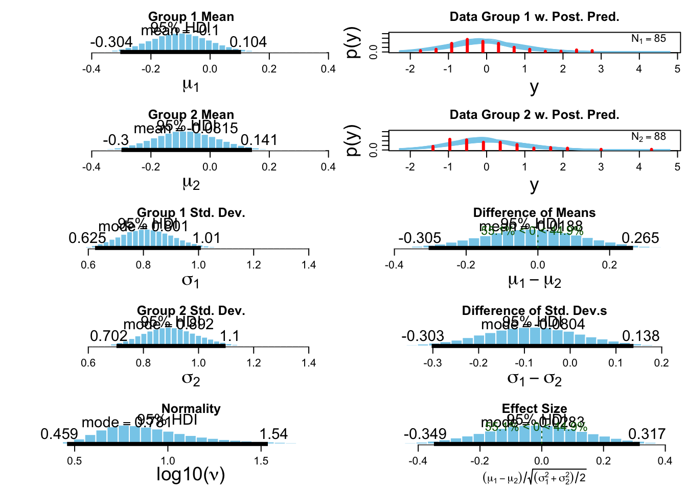

Sociometer analysis
Benjamin Holding
02 May, 2018
Descriptive statistics
sociometric.tagged %>% group_by(SD) %>% summarise(mean(speech_profile_total_speaking),sd(speech_profile_total_speaking)) %>% print.data.frame()## SD mean(speech_profile_total_speaking) sd(speech_profile_total_speaking)
## 1 0 649.5180 126.6614
## 2 1 616.1271 116.4013sociometric.tagged %>% group_by(SD) %>% summarise(mean(audio_front_volume_SCALED),sd(audio_front_volume_SCALED)) ## # A tibble: 2 x 3
## SD `mean(audio_front_volume_SCALED)` `sd(audio_front_volume_SCALED)`
## <int> <dbl> <dbl>
## 1 0 0.0175 1.05
## 2 1 -0.0183 0.952sociometric.tagged %>% group_by(SD) %>% summarise(mean(audio_front_vol_consistency_SCALED),sd(audio_front_vol_consistency_SCALED)) ## # A tibble: 2 x 3
## SD `mean(audio_front_vol_consistency_SCALED)` `sd(audio_front_vol_co…
## <int> <dbl> <dbl>
## 1 0 -0.0456 0.989
## 2 1 0.0477 1.01Analysis
Total speaking time
#set the priors
Speaking.priors <- list(muM = 1050, muSD = 525)
# run the bayesian 't-test'
Speaking_best <- BESTmcmc(sociometric.tagged$speech_profile_total_speaking[sociometric.tagged$SD ==1],
sociometric.tagged$speech_profile_total_speaking[sociometric.tagged$SD ==0],
priors = Speaking.priors,
parallel = T)## Waiting for parallel processing to complete...done.#running the same to get the priors
Speaking_best_priors <- BESTmcmc(sociometric.tagged$speech_profile_total_speaking[sociometric.tagged$SD ==1],
sociometric.tagged$speech_profile_total_speaking[sociometric.tagged$SD ==0],
priors = Speaking.priors,
parallel = T,
doPriorsOnly = T)## Warning: The output shows the prior distributions,
## NOT the posterior distributions for your data.## Waiting for parallel processing to complete...done.# check the output
speaking.summary <- summary(Speaking_best)
speaking.summary## mean median mode HDI% HDIlo HDIup compVal %>compVal
## mu1 617.576 617.587 617.402 95 592.297 643.0514
## mu2 648.780 648.728 647.784 95 621.899 675.1463
## muDiff -31.205 -31.187 -32.533 95 -68.064 5.1615 0 4.72
## sigma1 113.585 113.181 112.136 95 94.364 133.3602
## sigma2 122.792 122.447 121.870 95 102.149 144.9300
## sigmaDiff -9.206 -9.189 -7.506 95 -36.677 17.3595 0 24.80
## nu 38.402 29.712 14.893 95 3.631 98.1115
## log10nu 1.467 1.473 1.489 95 0.850 2.0809
## effSz -0.264 -0.264 -0.265 95 -0.576 0.0418 0 4.72#Creating a plot of the posterior distribution for the difference between groups
plot(Speaking_best) #the probability that the true value is smaller than zero = 95.5%
#is the model a reasonable description of the data?
plotPostPred(Speaking_best)
#to see all plots
plotAll(Speaking_best)
Total volume
# run the bayesian 't-test'
total_volume_best <- BESTmcmc(sociometric.tagged$audio_front_volume_SCALED[sociometric.tagged$SD ==1],
sociometric.tagged$audio_front_volume_SCALED[sociometric.tagged$SD ==0],
parallel = T)## Waiting for parallel processing to complete...done.# check the output
total_volume.summary <- summary(total_volume_best)
total_volume.summary## mean median mode HDI% HDIlo HDIup compVal %>compVal
## mu1 -0.1029 -0.1048 -0.1057 95 -0.303 0.105
## mu2 -0.0720 -0.0729 -0.0663 95 -0.290 0.148
## muDiff -0.0309 -0.0308 -0.0142 95 -0.316 0.256 0 41.6
## sigma1 0.8206 0.8177 0.8133 95 0.637 1.017
## sigma2 0.9063 0.9026 0.8910 95 0.711 1.102
## sigmaDiff -0.0858 -0.0854 -0.0904 95 -0.305 0.134 0 21.9
## nu 11.3389 7.7789 5.3162 95 2.193 31.448
## log10nu 0.9417 0.8909 0.7964 95 0.466 1.536
## effSz -0.0358 -0.0356 -0.0137 95 -0.371 0.290 0 41.6#Creating a plot of the posterior distribution for the difference between groups
plot(total_volume_best)
#is the model a reasonable description of the data?
plotPostPred(total_volume_best)
#to see all plots
plotAll(total_volume_best)
Volume variation
# run the bayesian 't-test'
variation_volume_best <- BESTmcmc(sociometric.tagged$audio_front_vol_consistency_SCALED[sociometric.tagged$SD ==1],
sociometric.tagged$audio_front_vol_consistency_SCALED [sociometric.tagged$SD ==0],
parallel = T)## Waiting for parallel processing to complete...done.# check the output
variation_volume.summary <- summary(variation_volume_best)
variation_volume.summary## mean median mode HDI% HDIlo HDIup compVal %>compVal
## mu1 0.0352 0.0352 0.0229 95 -0.189 0.252
## mu2 -0.0542 -0.0551 -0.0604 95 -0.266 0.155
## muDiff 0.0895 0.0889 0.0817 95 -0.212 0.395 0 71.9
## sigma1 1.0042 0.9996 1.0009 95 0.847 1.171
## sigma2 0.9788 0.9744 0.9623 95 0.830 1.142
## sigmaDiff 0.0255 0.0250 0.0141 95 -0.199 0.246 0 59.1
## nu 46.9682 38.5711 23.1720 95 6.270 109.632
## log10nu 1.5822 1.5863 1.6550 95 1.043 2.127
## effSz 0.0904 0.0897 0.0852 95 -0.211 0.399 0 71.9#Creating a plot of the posterior distribution for the difference between groups
plot(variation_volume_best)
#is the model a reasonable description of the data?
plotPostPred(variation_volume_best)
#to see all plots
plotAll(variation_volume_best)
#Creating tables for the manuscript
simple_speaking <- data.frame(row.names = "Speaking Duration",
Control_mu = speaking.summary[2,1],
Control_sigma = speaking.summary[5,1],
SD_mu = speaking.summary[1,1],
SD_sigma = speaking.summary[4,1],
Difference_mean = speaking.summary[3,1],
HDI_low = speaking.summary[3,5],
HDI_High = speaking.summary[3,6],
Effect_size = speaking.summary[9,1])
simple_volume_average <- data.frame(row.names = "Speech Volume Average",
Control_mu = total_volume.summary[2,1],
Control_sigma = total_volume.summary[5,1],
SD_mu = total_volume.summary[1,1],
SD_sigma = total_volume.summary[4,1],
Difference_mean = total_volume.summary[3,1],
HDI_low = total_volume.summary[3,5],
HDI_High = total_volume.summary[3,6],
Effect_size = total_volume.summary[9,1])
simple_volume_variation <- data.frame(row.names = "Speech Volume Variation",
Control_mu = variation_volume.summary[2,1],
Control_sigma = variation_volume.summary[5,1],
SD_mu = variation_volume.summary[1,1],
SD_sigma = variation_volume.summary[4,1],
Difference_mean = variation_volume.summary[3,1],
HDI_low = variation_volume.summary[3,5],
HDI_High = variation_volume.summary[3,6],
Effect_size = variation_volume.summary[9,1])
Sociometric_table <- rbind(simple_speaking, simple_volume_average, simple_volume_variation)
Sociometric_table <- round(Sociometric_table,2)
Sociometric_APA_table <- cbind(Outcome = row.names(Sociometric_table), Sociometric_table)
myoriginalwd <- getwd()
setwd("Tables_and_plots")
apa.table(data = Sociometric_APA_table,
level1.header = c("",
"Control sleep",
"Sleep deprivation",
"Difference"),
level1.colspan = c(1,2,2,4),
level2.header = colnames(Sociometric_APA_table),
number = "4",
title = "Bayesian Estimation of group differences in sociometric output",
filename = "Sociometric_table.docx",
note = "Note. HDI = Highest Density Interval; Std.dev = residual standard deviation",
save = T)$table
setwd(myoriginalwd)sociometric.speechduration.data <- melt(cbind("sleep deprivation" = Speaking_best$mu1,
"control sleep" = Speaking_best$mu2,
"prior" = Speaking_best_priors$mu1))
Speech.duration.plot <- ggdensity(sociometric.speechduration.data, x = "value",
rug = F,
color = "Var2",
fill = "Var2",
xlim = c(550, 700),
xlab = "Speech Duration",
add = "mean",
palette = c("#E495A5", "#39BEB1","#ABB065")) +
stat_pointintervalh(aes(y = -0.025),
data = sociometric.speechduration.data[which(sociometric.speechduration.data$Var2 == "sleep deprivation"),], fun.data = mean_hdih, .prob = c(.95, .80), color = "#E495A5") +
stat_pointintervalh(aes(y = -0.05),
data = sociometric.speechduration.data[which(sociometric.speechduration.data$Var2 == "control sleep"),], fun.data = mean_hdih, .prob = c(.95, .80), color = "#39BEB1") +
annotate("text", label = "80% and 95% HDI", x = 20.5, y = -0.044, hjust = 0, vjust = 0.3)
#####
sociometric.volumeVariation.data <- melt(cbind("sleep deprivation" = variation_volume_best$mu1,
"control sleep" = variation_volume_best$mu2))
Speech.volume.plot <- ggdensity(sociometric.volumeVariation.data, x = "value",
rug = F,
color = "Var2",
fill = "Var2",
xlim = c(0.53, 0.65),
xlab = "Speech Volume Consistency (1 = max consistency)",
add = "mean",
palette = c("#E495A5", "#39BEB1")) +
stat_pointintervalh(aes(y = -50),
data = sociometric.volume.data[which(sociometric.volumeVariation.data$Var2 == "sleep deprivation"),], fun.data = mean_hdih, .prob = c(.95, .80), color = "#E495A5") +
stat_pointintervalh(aes(y = -100),
data = sociometric.volume.data[which(sociometric.volumeVariation.data$Var2 == "control sleep"),], fun.data = mean_hdih, .prob = c(.95, .80), color = "#39BEB1") +
annotate("text", label = "80% and 95% HDI", x = 0.014, y = -75, hjust = 0, vjust = 0.3)
###
sociometric.volumeVariation.data <- melt(cbind("sleep deprivation" = total_volume_best$mu1,
"control sleep" = total_volume_best$mu2))